The Broken Court — spatial study Play the five-court run · Original Guardian run
Authored plans and synthetic trajectories are diagnostics, not gameplay captures or a layout score. Same mixed enemy composition for ordinary probes; identical Guardian rules for the final room. 200ms delayed observations, imperfect aim and the existing keyboard motor. Empty regions can reflect policy bias. Purple dots show field placement.
Eight candidate plans 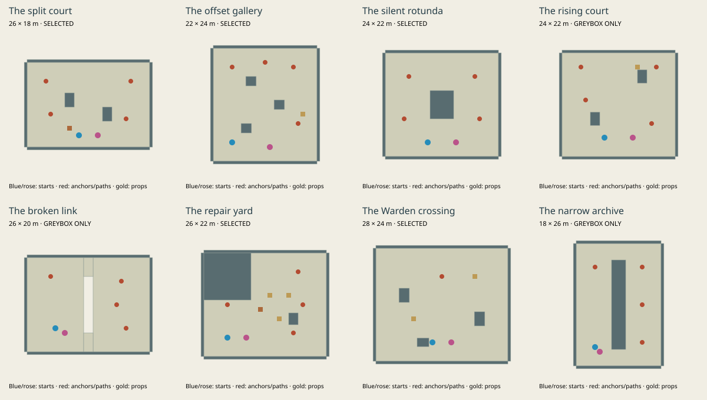
The split court Crossfire across staggered sight breaks. Play isolated room
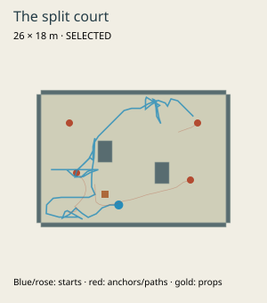
base: victory, 22.12s, 26 damage; 41 visited 2m cells 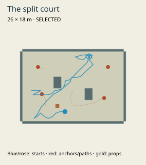
reaction: victory, 16.15s, 28 damage; 35 visited 2m cells 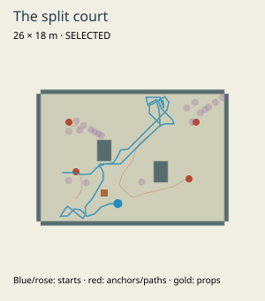
field: victory, 15.93s, 0 damage; 30 visited 2m cells 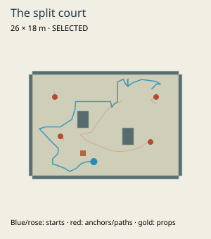
structure: victory, 10.38s, 0 damage; 31 visited 2m cells 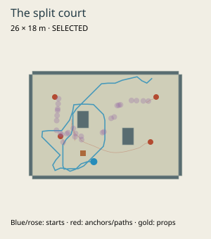
basin: victory, 15.18s, 0 damage; 37 visited 2m cells 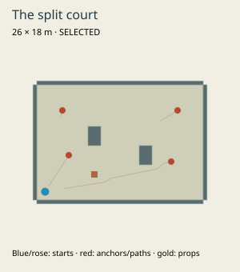
Base corner / no movement: defeat, 15.8s, 100 damage The offset gallery Three circulation lanes around alternating piers. Play isolated room
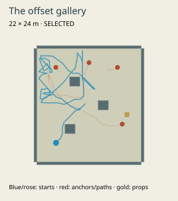
base: victory, 23.57s, 26 damage; 42 visited 2m cells 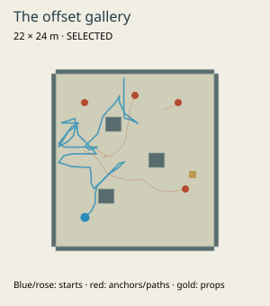
reaction: victory, 16.53s, 0 damage; 31 visited 2m cells 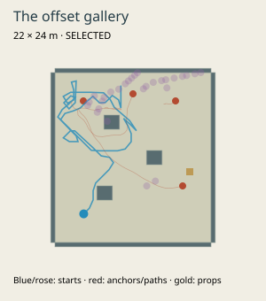
field: victory, 19.12s, 0 damage; 31 visited 2m cells 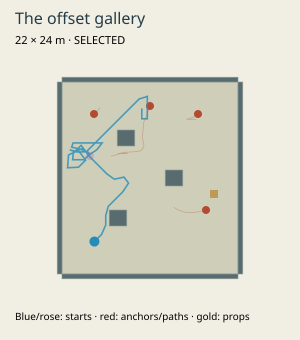
structure: victory, 11.15s, 14 damage; 25 visited 2m cells 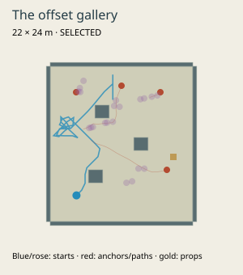
basin: victory, 12.63s, 42 damage; 21 visited 2m cells 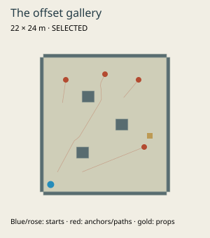
Base corner / no movement: defeat, 20.92s, 100 damage The silent rotunda A central island splits sight and approach. Play isolated room
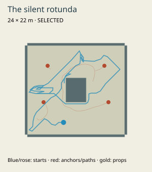
base: victory, 23.57s, 0 damage; 55 visited 2m cells 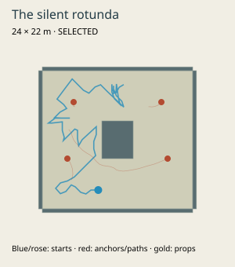
reaction: victory, 15.9s, 0 damage; 37 visited 2m cells 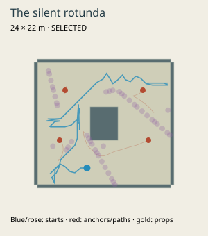
field: victory, 20.03s, 14 damage; 37 visited 2m cells 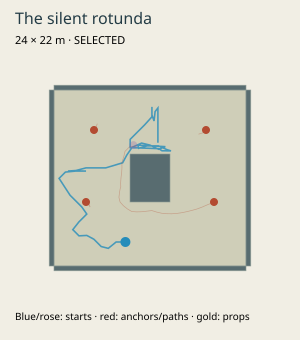
structure: victory, 11.88s, 14 damage; 26 visited 2m cells 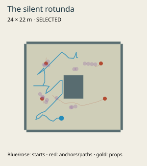
basin: victory, 11.52s, 0 damage; 33 visited 2m cells 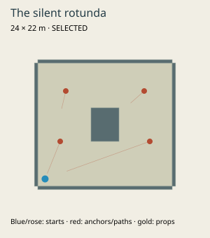
Base corner / no movement: defeat, 16.35s, 100 damage 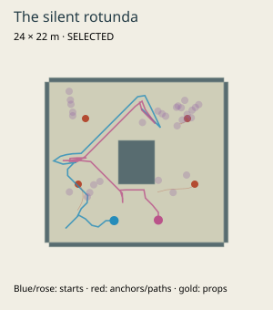
Two field mages: victory, 9.35s, 0 damage The repair yard Broad elbow changes firing direction; materials line useful impacts. Play isolated room
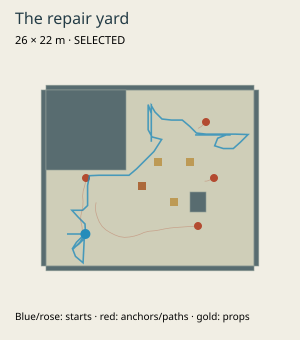
base: victory, 21.7s, 0 damage; 30 visited 2m cells reaction: victory, 15.32s, 0 damage; 24 visited 2m cells 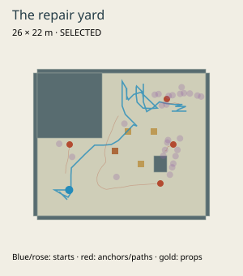
field: victory, 16.92s, 2 damage; 30 visited 2m cells structure: victory, 10.03s, 0 damage; 21 visited 2m cells basin: victory, 10.35s, 0 damage; 24 visited 2m cells 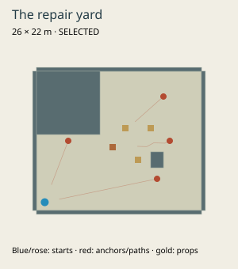
Base corner / no movement: defeat, 30.23s, 100 damage The Warden crossing Open diagonal marches; distinct peripheral sight breaks and rescue approaches. Play isolated room
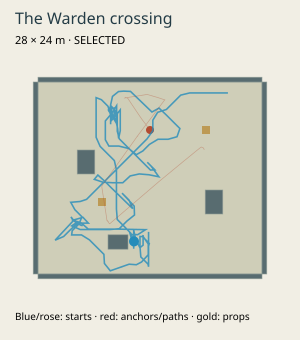
base: victory, 44.95s, 14 damage; 66 visited 2m cells 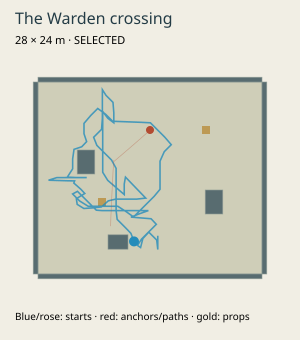
reaction: victory, 28.18s, 0 damage; 49 visited 2m cells 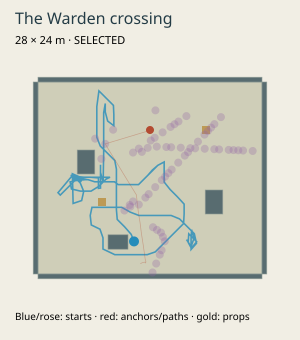
field: victory, 31.95s, 0 damage; 52 visited 2m cells 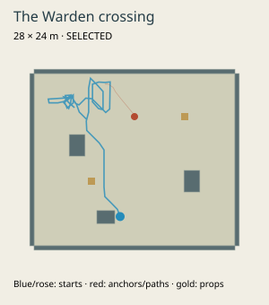
structure: victory, 14.27s, 0 damage; 25 visited 2m cells 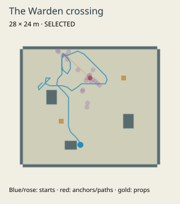
basin: victory, 13.97s, 0 damage; 30 visited 2m cells 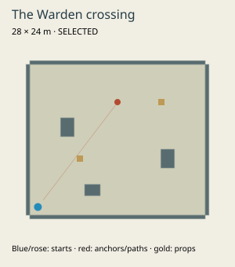
Base corner / no movement: defeat, 50.5s, 100 damage Actual gameplay Actual keyboard/mouse gameplay, normal health and enemies. Build 615bdffc0d55; Model A, balanced camera/tempo, Lightweight. Native Chrome 152 / Intel UHD, 1440×900 viewport, 1152×720 buffer. The contact sheet and recorded 26-second excerpt are separate runs of the same build, not concept art. Performance conditions and exceptions are recorded in the repository evidence.
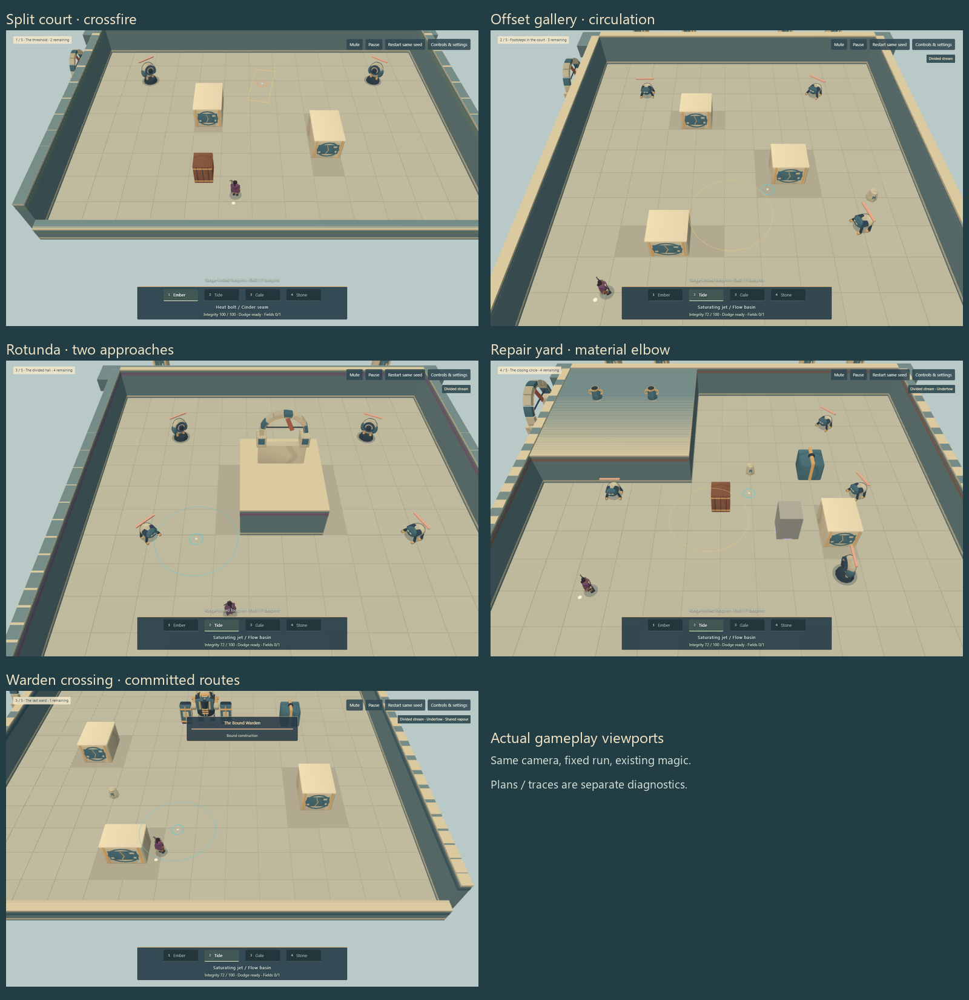
Greybox comparisons The rising court · The broken link · The narrow archive